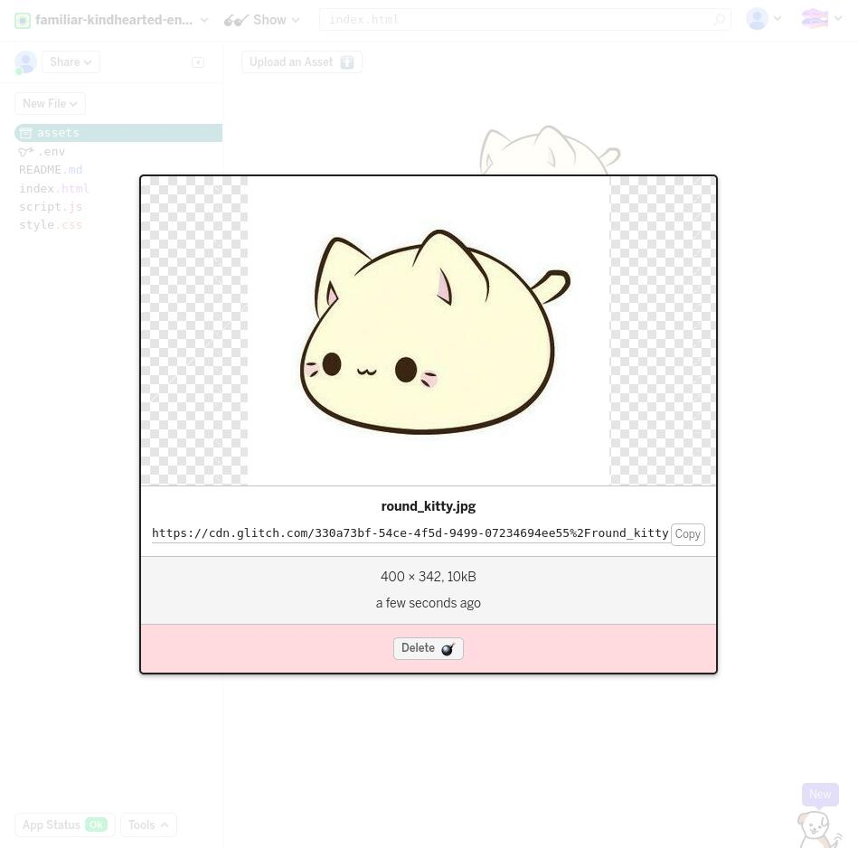
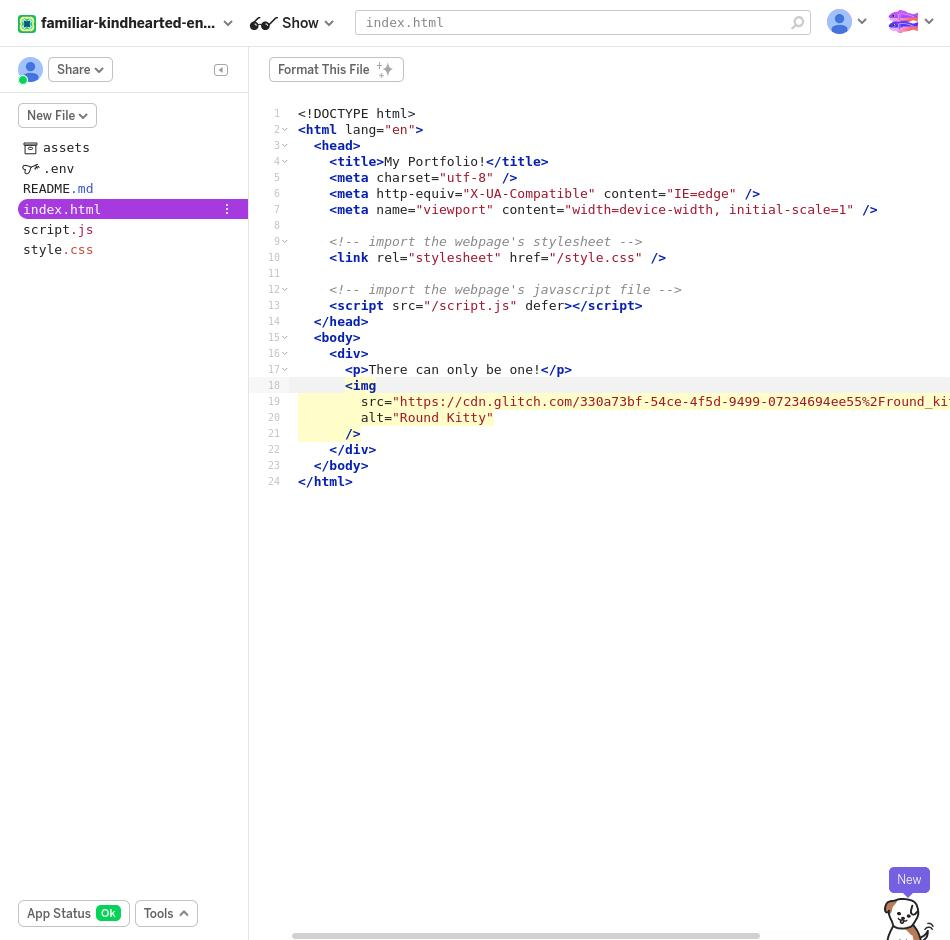
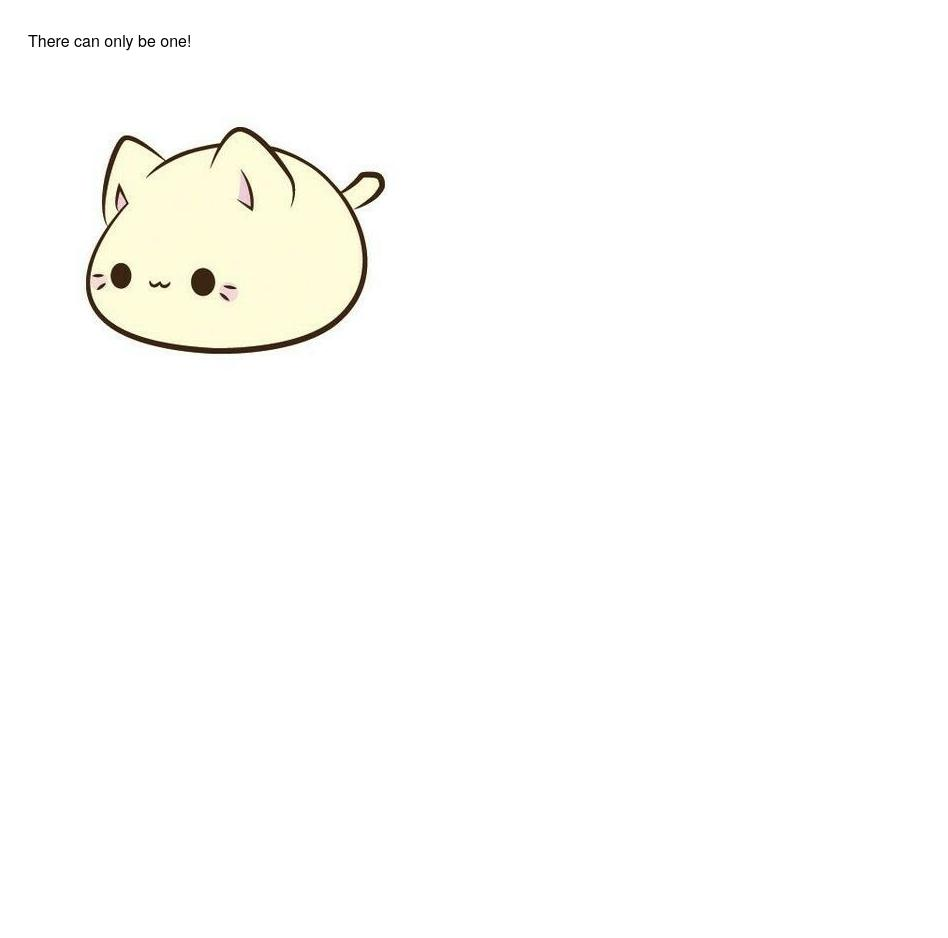

Brief Practical Crash Course in HTML/CSS
2020-04-24From Bare Bones Page to Online Website
I wanted to make this webpage for the hobbyists/students/I-avoid-computers-and-code-because-they-are-so-confusing advocates (and specifically future educators who might be interested in having some nice tools in their repertoire) that don't know too much about programming to help them realize, mainly, three things:
- Programming doesn't have to be scary. There's actually a lot of intuition to be found in it once you understand some basics.
- Programming can be fun. There's a lot of useful and creative outlets that it can be used for which is why I specifically chose HTML/CSS--Ibelieve it represents the most aesthetic view of writing code.
- I suppose this is a derivative of the last point, but programming is an art. This is something I'm still learning, but the deeper you go with it the more you realize there are elements of design, creativity, and exploration in programming.
Before I go any further, I want you to know what we're even working with here and why. What is HTML? What is CSS? And why do we want to learn them?
HTML is a convenient acronym (there are A LOT of acronyms in software) for Hyper Text Markup Language. I will be referring to this as HTML from hereon out because I'm sane.
Basically, you use HTML to write up what goes on your webpage from text and images to actual areas containing these elements. You can think of the web coder at this point as an artist deciding where his painting should go and what content should go on the canvas.
Broadly, here's what HTML consists of and what you will be seeing later when you get to work with it!
- HTML is a series of elements that tell an Internet browser how to display your content
- Every element is represented by special tags which we will get to learn about mroe in-depth later
- Tags label the content that you put onto the webpage
CSS stands for Cascading Style Sheets. Like the title implies, this is the tool we use to style our webpage: CSS designates the overall layout of the HTML elements and what they look like. The web coder as an artist is using his paint strokes and arranging the designs on his painting--however, CSS goes a lot deeper than thsi and there are some increidble designs and layouts you can make of it that you will get to create!
Broadly, here's what CSS consists of:
- A wide variety of attributes and characteristics you can apply to your elements (e.g. color, spacing, font size, padding)
- We will see this more later: By nature of design, you can inherit of share these characteristics between elements by only having to write a CSS statement once
- Inline: You style the look and layout of each element individually
- Internal: You create a special section in your webpage which decides the overall style of your webpage
- External: You create a special file outside of your HTML document that is connected to it and still styles the HTML elements
Motivation
So why learn all of this? We want to make a website! Websites are an awesome way to digitally express something we find of interest whether that's a forum, a blog, or even a personal gallery. In a sense, they are also a means to communicate something between people. Your favorite social media websites like Facebook and Twitter as well as email services like Gmail operate on a lot of the same material that we will be looking at here.
It's obvious that many of the services we use in our daily lives operate as websites and to that end they are incredibly important. But it can be kind of difficult to understand where they come from let alone how to make one yourself. That's why this page exists. I want to show you that it can be a lot more intuitive than you might think. This is also the beginning of you being able to express yourself in a remarkably creative manner where the possibilities are endless. You don't have to be a programmer to understand how to build websites from scratch.
As an Educator: Building your own website in HTML and CSS provides you a new means of creating learning opportunities for everyone you mentor. You will also be able to take responsibility for harnessing a new mode of expression and the process of learning can also teach you how you might best fit in different learning environments. As a student, I am very excited to be able to share this with you because I believe technology, when used right, can create a massive, positive impact for public education.
HTML and CSS are the bread and butter of creating a website. There is also a cross platform scripting language called JavaScript which defines the behaviour of a website, but we will focus on HTML and CSS for now because there's already so much you can do with these two tools.
Our End Goal
The final goal for this tutorial is to get you to build a personal online portfolio for yourself. I have a few sample images of what the final product will eventually look like for you to see, but you can also check out the website itself and play around with it.
Our portfolio represents a single page that showcases all of the glorious work we've gathered! You'll notice there are several important components that we will be building for our website:
- Welcome Section with our title and a showcase of our lovely visage
- Navigation Bar with links that move to different sections of the page
- About Section with a small blurb of who we are
- Gallery of our "work" with several images that have scroll-over descriptions of our work
- Contact Section with a dummy form to get into contact with our audience
And this is what we're starting with!
That's right. From blank page to a full-fledged online portfolio. Let's get started learning!
Software Needed
The software we will be using to build our HTML/CSS project is called Glitch. Glitch is an interactive programming environment that allows you to edit and run code directly on your internet browser, making it very convenient for our purpose since we can skip and further setup process.
Overall, it's a big time-saver and you can even download your project straight off of the environment when you are done developing! Go ahead and make your way over to Glitch and click on New Project, then hit hello-webpage to get started. You should see a couple screens like the ones provided below.


You should find a list, or directory, of files on the left side of the project screen. Click on index.html as this will be where all of our HTML is going to take place.
Notice that the file extension is .html so this will allow web browsers and computers to process our file as an HTML document! We could actually create a new file on our computer with this extension and it would be processed the same way.
Here's the page you should be seeing:

There are several important components on this page I would like to highlight and will make it easier for you to use the editor.

- The pink region represents your editor where you will type all of your code
- The green region is the Show button which will allow you to preview what your page looks like in the present state of your code
- The blue region is your directory list which is a hierarchy of how your files are organized
Even if this looks daunting to you, then rest assured, you will come out of this knowing every single bit of what is on the page right now. We're actually going to start of clearing a few parts of the page to get a minimal HTML page running.
- Highlight all of the text in the editor from
<h1>...on Line 16 to</script>on Line 25 - Backspace it away!

The Basic, Minimal Structure of HTML
Right now, you are looking at the bare minimum for an HTML page to run. If you preview your page with the Show button then you should see a blank, white page. If you look up at your tabs, the tab title will be Hello!.
So what's going on here? Somehow the code we have written so far is generating this page with a title that is eerily similar to the text written in the <title>...</title>
Let's break it down piece-by-piece!
<!DOCTYPE html>is telling our browser to parse our document as an HTML file<html>is an element that will always be the root, or most broad level, of our document<head>gives meta information about our webpage like page description, document author, etc. Search engines can use this information to help find our website and it will also contain special scripts we may want to run as well. You won't see this metadata show up on your page, but it can be super useful--there are coders whose entire job is to optimize for search engine relevancy!<title>is a tag for a title element on our webpage which will show up on the tab like was previously mentioned<body>tag is where things get interesting for building visual elements since it captures all the visible content that we will provide
For now, let's try changing the text in the title tag to My Portfolio and writing whatever we want in the area bounded by <body>...</body>


Tags and Their Attributes
We're about to start handling the big work of making our portfolios, but there are a couple more topics that are crucial to understand before we begin.
I've mentioned tags a few times and you might be wondering what those are. Tags are essentially labels for our elements, denoted by angle brackets. At this point, you've already seen several appear in our basic document and I'd like for you to get an idea of how to write them as well as a few exampels that we will be using to make our portfolio.
- Most tags come in pairs with the closing tag containing a
/. An example of this is<title>...</title>or<body>...</body> - This starting and ending tag formulation will tell the browser where your element section starts and ends with all the content going in-between
And here are a few important tags we'll be working with:
<div>: A more general and commonly used tag, this defines a general division or section of our HTML document<p>: A paragraph element. In HTML, you won't be able to change how your text looks the usual way--you can't just add extra spaces or lines in your code--and this tag will help you write the text for browsers<a>: The anchor tag supports hyperlinks which will be used to link to other webpages or even a specific area on our own webpage<img>: This tag allows you to insert images into your HTML site. You will specify a file name for it to determine which image is displayed<form>: This tag will create a form with multiple fields that a user on your website can put information in. This will make up the contact form portion of our portfolio
I want to mention that there are many different tags than the ones I've listed and that some of them will come into play in our own project. However, the tags I've listed have the most distinct functions in our project so I've chosen to highlight them.
Let's add two of these elements into our document now. Inside our <body> element area, we'll add a <p> enclosing our text and a <div> enclosing both of these elements.
You won't be seeing any visible changed when you preview your page, but notice how we're actually putting our <p> tag inside of the <div>tag. This is what we call nesting and it plays an important part in how our elements interact together, especially as we begin to look at special characteristics of tags called attributes.
Attributes and Nesting
Conceptually, we can think of all of our elements a as parents, children, and descendants. Our <div> is a parent to the <p> element because we declared it inside of the <p> tag. We call this type of relationship nesting. In fact, the <div> and <p> are both nested inside the <body>.
However, if we were to nest another element inside the <p> tag then it become a descendant of the original <div>. Our <div> would be a grandparent!
This understanding of relaitonships between elements is especially important as we start getting into attributes. Attributes are characteristics we assign to HTML elements inside the opening tag like what images will be displayed by the <img> tag, what link or section our <a> tag points towards, or even how we group elements together.
We can insert an image in our document now by adding an <img> tag like so: <img src="link" alt="alt text">.
I will be using a sample image that I will leave for you to download or feel free to download and save your own. Just make sure to upload it to the Glitch assets/ folder by clicking on the folder and pressing Upload an Asset.
Sample image:
When you upload your image, make sure to copy the URL that displays when you click on your image. This will go inside the src attribute of the <img> tag.
  
Due to the nature of Glitch, we actually store a copy of our image file on their databases and we use the copied URL to reference the image in the database. However, in an independent project, we could have also referenced the file in our project itself such as <img src="image.jpg" alt="An Image"> with our file structure looking like this:
project | README.md | index.html | script.js | style.css | image.jpg
I won't go into much further detail about directories and file structure since that isn't our focus right now. However, I'm hoping you can see HTML attributes at play when we use them in our <img> tag. In this case, we are using attributes to specify what image is displayed when we use <img> in our HTML.
Notice too that our <img> element is now parents by the <div> element and is a child of it as well alongside our <p> element. We can also think of the <div> as containing these other elements so that it forms a kind of functional grouping of them. When it comes to styling our page with CSS, we'll use this grouping to our advantage to style multiple sections at once.
Modeling Our Page with HTML
Now it's time to dig in deep with creating our very first website in HTML! It might not look pretty at first, but we want to lay out the skeleton for our website before we get into the matter of what colors and styles we want to paint onto it.
Note: Each designer/developer will have their own preference of workflow. Some may choose to style elements as they go, others may take a more topdown approach of writing out all of their HTML out before getting to the styling. As any developer gains more experience, it's encouraged to try out different approaches to find which one suits you. For now, we'll take the topdown approach.